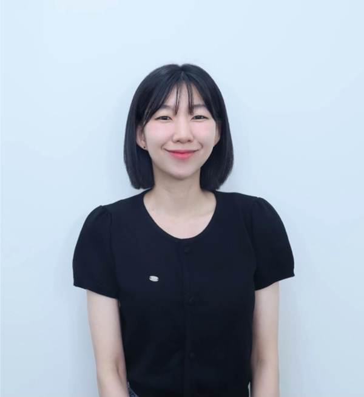

안녕하세요. 따뜻한 변화를 꿈꾸는
UXUI 디자이너가 되고 싶은 장윤주입니다.
오랜기간 카페에서 일하면서 알게 된 것은 사용자의 불편함이었습니다.
단순히 예쁜 디자인 아니라, 누구나 쉽게 사용할 수 있는 흐름이 사용자에게 얼마나 필요한지
느꼈습니다.
현장에서
느꼈던 불편함을 관찰하던 눈을 이제는 피그마와 코드에 담아 누군가의 일상을 편리하게 만드는 디자이너가 되고싶습니다.

1991년 7월 16일에 태어났습니다
대학교에 입학했습니다
대학교 4학년때 중국교환학생을 갔습니다
대학교 졸업 후 고등학교 교무행정사로 일을 했습니다
카페에서 바리스타로 일하기 시작했습니다
UIUX 프론트엔드 KDT 교육